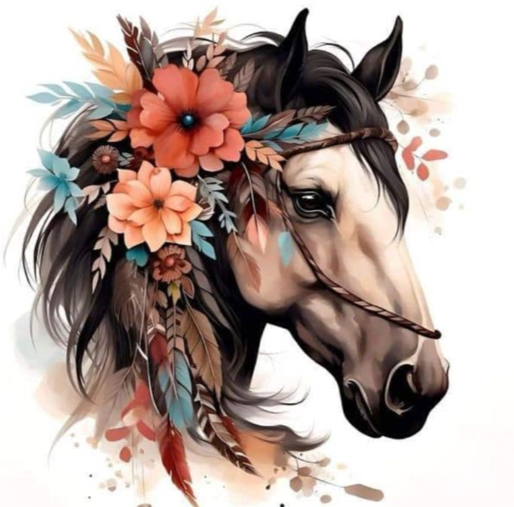

Nuestra Historia

La comparsa Andaluces comenzó a idearse en el año 2023 por un grupo pequeño, quienes poco a poco fueron reuniendo a más personas para que formara parte de esta. Hasta que por fin llegamos al mínimo requerido para fundar nuestra querida comparsa. Todas estas personas vinimos aquí por nuestro amor a las fiestas de moros y cristianos, por nuestras ganas de desfilar en rambla y por la ilusión de crear algo que es nuestro. Porque para nosotros, esto no es únicamente una comparsa para las fiestas de nuestro pueblo, es una gran familia.
Por todo esto, cuando en 2024 se rechazó la propuesta de incorporación de la comparsa a las fiestas, no nos rendimos. En lugar de disolvernos seguimos luchando. Hicimos una barraca privada para disfrutar ese año de las fiestas y recibimos el apoyo del pueblo.
Finalmente el 1 de febrero de 2025 se hizo nuestro sueño realidad, oficialmente ya somos comparsa en nuestras queridas fiestas. Ahora solo nos queda disfrutar en la rambla con nuestros trajes, demostrar porqué hemos luchado tanto y ser la familia que desde el primer momento hemos dicho que somos. Todavía somos una comparsa pequeña, acabamos de nacer, pero tenemos muchas ganas de que esto que hemos creado se haga grande y podamos contar con más personas.
¡Que viva la comparsa Andaluces!